감자 전쟁 - 왜 나폴레옹의 병사들은 옥수수를 먹지 않았을까
게시: 2017-01-30T17:45:50+09:00
전에도 몇 번 인용했던, 하인리히 E. 야콥이라는 분이 지은 '빵의 역사'라는 책에는 프랑스 대혁명 직후, 빵을 달라며 난동을 부린 억센 아주머니들의 이야기가 나옵니다. 당시 혁명 정부의 무능함과 상인들의 탐욕, 그리고 혁명과 전쟁의 혼란이 겹쳐 파리에서는 정말 빵은 커녕 밀가루를 구하기도 어려운 형편이라서, 분노한 아주머니들이 주동이 된 군중이 빵집 주인은 물론 국민공회의 의원까지 닥치는 대로 살해하는 끔찍한 비극까지 일어났다고 합니다. 이런 상황이 수년간 계속 되는데, 대체 파리 사람들은 무엇을 먹고 살았을까요 ?
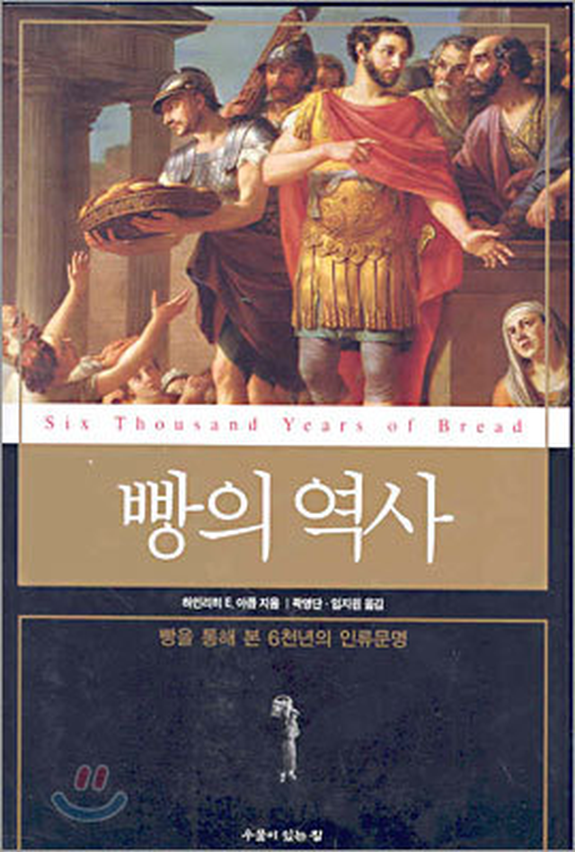
'빵이 없으면 케익(정확하게는 브리오슈)을 먹으면 될 것이 아닌가?' 라는 말처럼, 정말 케익을 먹었을까요 ? 물론 아닙니다. 이 '빵의 역사'란 책에도, 파리 시민들은 오로지 밀가루로 만든 진짜 빵만을 원했을 뿐, 감자 같은 것은 쳐다보지도 않으려 했다고 적혀 있습니다. 즉, 감자 같은 구황 작물은 먹을 수 있었으나, 그런 것으로는 불만이 달래지지 않았다는 것이지요,
1805년 오스트리아로 쳐들어가던 나폴레옹의 군단들은 프랑스-독일 간의 자연 경계인 라인강을 넘어서면서부터는 독일 현지에서 징발한 식량으로 먹고 살아야 했는데, 전쟁 초기다 보니 징발이 그런대로 잘 되었습니다. 그래서 하루에 배급되는 1인당 식량은 아래와 같았습니다.
빵 1.5 파운드
고기 0.5 파운드
쌀 1 온스
요리를 위한 장작은 현지 주민들이 공급
감자는 무지렁이 아일랜드인들 또는 돼지 사료로나 쓰는 뿌리 채소일 뿐 사람이 먹는 음식이 아니라고 여기던 영국군은 물론이고, 감자 전도사 파르망티에(Antoine-Augustin Parmentier)의 모국인 프랑스에서조차도 감자는 정규 식단에 오르지 못했던 것입니다.
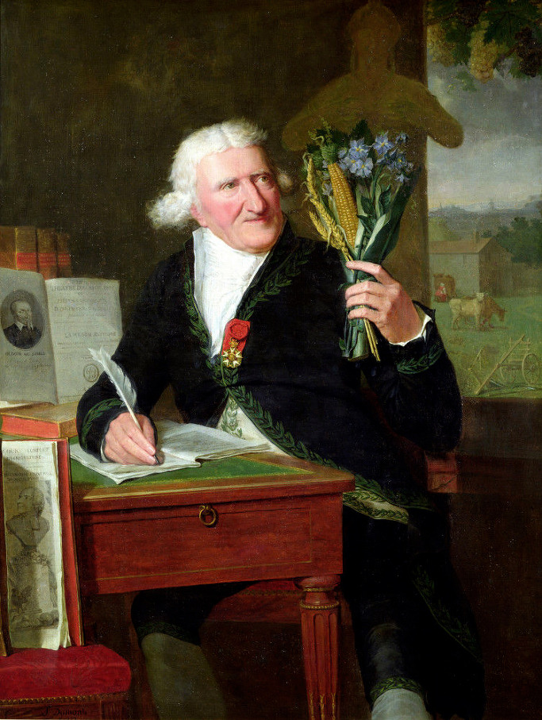
(감자 전도사 파르망티에입니다. 그는 7년 전쟁에 참전했다가 프로이센에서 포로 생활을 하면서 감자라는 것을 알게 되었습니다. 프랑스에 돌아온 그는 프랑스인을 괴롭히던 기근과 기아에서 벗어나기 위해 이 신세계 작물을 널리 보급해야겠다고 생각하고, 많은 활동을 펼쳤습니다. 그는 현대적인 마케팅 기법으로 볼 때도 매우 훌륭한 마케터였습니다. 그는 벤자민 프랭클린이나 라브와지에 같은 유명인사들을 감자가 메인 요리 중 하나인 오찬에 공개 초청하기도 하고, 왕과 왕비에게 감자 꽃을 달게 하기도 했습니다. 그의 감자 마케팅 중에 가장 빛나는 부분은 감자 밭의 보초병이었습니다. 그는 1787년 루이 16세에게서 할당받은 파리 근처의 농지에 감자를 잔뜩 심어 놓고는, 마치 귀한 작물이라도 되는 것처럼 무장 병사들을 배치하여 지키게 했습니다. 그러고는 몰래 그들에게 '사람들이 너희에게 뇌물을 주고 감자를 뽑아 가려 하거든 못 이기는 척 허락하고, 혹 밤에 감자를 훔치려 하는 도둑이 있거든 못 본 척하라'고 지시했습니다. 그런데 결과는 폭망이었습니다. 아무도 밍밍한 맛의 못 생긴 감자를 거들떠보지 않았습니다.)
하지만 배고픔 앞에서는 인간도 돼지가 될 수 밖에 없었습니다. 원래부터 척박한 토지에 영국인들의 수탈에 시달리던 아일랜드인들은 감자 덕분에 인구가 계속 늘어났고, 프리드리히 대왕의 병사들도 감자를 먹으며 전장을 누볐습니다. 흔히 유럽 앙시엥 레짐 간의 마지막 전쟁이라고 일컬어지는 바이에른 왕위 계승 전쟁(1778~1779)은 프리드리히 대왕의 프로이센과 마리아 테레지아의 오스트리아 간의 전쟁이었는데, 이 전쟁은 흔히 '감자 전쟁'(Kartoffelkrieg)이라고 불립니다. 서로 유리한 위치를 차지하려고 전략 기동 및 상대방 보급 차단에만 주력할 뿐 큰 전투가 없었던 이 전쟁에서, 양측 군대는 상대보다 더 오래 버티기 위해 식량 확보에 주력하다 보니 이런 평화롭지만 다소 불명예스러운 이름을 얻었던 것입니다.
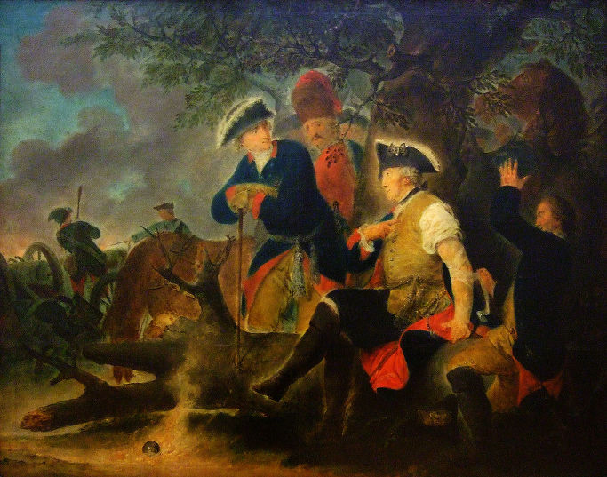
(감자 전쟁 도중 터진 상처를 치료 받고 있는 프리드리히 대왕입니다. 이 그림에 대해서는 크로아티아 저격병과 프리드리히 사이의 일화가 있지만, 별로 재미가 없으므로 패스...)
나폴레옹의 자랑스러운 그랑 다르메(Grande Armee)도 마찬가지였습니다. 제3차 대불동맹전쟁이 시작된 지 약 2달이 된 1805년 10월 24일, 나폴레옹은 (아마도 자신의 부하 관료였던) 프티에(A. M. Petiet)라는 사람에게 이런 내용의 편지를 보냅니다.
"우린 보급창도 없이 행군했네. 상황 때문에 어쩔 수 없었지. 우린 현지 식량 조달에 아주 유리한 계절을 끼고 있었고, 또 우리가 게속 승리를 거두고 밭에서 채소를 얻을 수 있었는데도 불구하고, 우리가 고생을 했다는 것에는 변함이 없었네. 밭에 감자가 없거나 우리 군대가 일부 패배를 겪기라도 했다면, 보급창이 없다는 점은 우리에게 엄청난 재앙을 불러왔을 것이야."
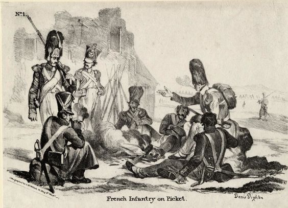
(고달픈 행군과 노숙 중에, 모닥불 속 뜨거운 감자 몇 알은 정말 큰 위안이 되었을 것입니다.)
실제로 나폴레옹의 수석 비서관이던 콩스탕 (Constant)의 회고록에 따르면, 아우스테를리츠 전투 2일 전부터는 아무런 정식 배급이 이루어지지 않아서 병사들이 주변 마을에서 구한 감자를 구워먹어야 했는데, 나폴레옹도 그런 병사들 틈에서 구운 감자를 집어 먹었다고 합니다. 또 1813년 메츠(Metz)에서 세바스티앙 마리(Sebastien Marie)라는 병사는 20일간 빵이라고는 구경도 못 했고, 최근 3일 동안은 아무 것도 먹지 못하고 행군해야 했다고 적고 있습니다. 그런데, 그 3일 중에도 먹긴 먹은 것이 있었는데, 바로 밭에서 병사들이 직접 뽑아낸 감자였습니다. 이런 기억들 때문인지, 1814년 1차로 폐위되어 지중해의 엘바섬으로 유배되었을 때 나폴레옹이 섬에 도착하여 처음 한 일 중의 하나가 섬 주민들에게 감자를 심도록 한 것이었다고 합니다. 엘바섬은 이탈리아어를 쓰는, 사실상 이탈리아 땅이었는데, 거기엔 아직 감자가 널리 보급된 상태가 아니었나 봅니다.
여기서 궁금한 점이 생깁니다. 나폴레옹 전쟁사를 읽다보면 여기저기서 감자 이야기는 자주 나오는데, 감자와 함께 대표적인 구황작물인 옥수수(maize) 이야기는 정말 찾기가 힘듭니다. 대체 왜 그럴까요 ? 혹시 이때는 아직 옥수수가 유럽에 전파되지 않았던 것일까요 ?
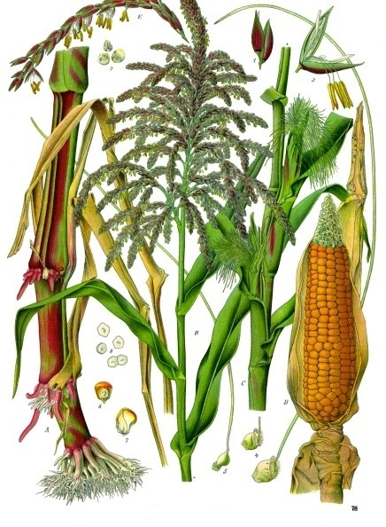
물론 그렇지 않습니다. 옥수수는 오히려 감자보다 유럽에 일찍 전파되었습니다. 감자가 유럽인에게 처음 알려진 것은 스페인 사람들이 페루에 도착한 1531년의 일이고, 감자는 그 몇 년 후에야 유럽에 도착한 것으로 보입니다. 그러나 옥수수는 1492년 아메리카에 최초로 도착한 콜럼부스가 첫 항해에서 가져온 신세계의 물자 중 하나였습니다. 옥수수는 기르는데 쟁기질도 필요없고 물도 그렇게 많이 필요하지 않으며, 수확량도 엄청나게 많은데 자라는데 불과 3개월 밖에 걸리지 않는 꿈의 작물이라고 할 수 있습니다. 그래서인지 그 전파 속도도 엄청나게 빨랐습니다. 1493년 그 알갱이가 콜럼부스 손에 의해 최초로 스페인에 들어온지 불과 오십년도 안되어 옥수수는 스페인-프랑스-이탈리아-발칸반도-터키를 거쳐 오늘날의 이란은 물론 중국까지 밭에 옥수수가 넘실댈 정도였습니다. 중국에서 옥수수 이야기가 처음 나오는 것이 1540년 정도인데, 이는 아무리 전파 속도가 빠르다고 해도 너무 빠르기 때문에 '중국으로 들어간 옥수수는 서쪽에서 전래된 것이 아니라 태평양의 섬들을 통해 들어온 것'이라는 학설이 있을 정도입니다. 특히 옥수수는 비교적 건조한 지방인 중동에서도 잘 자라 이슬람 지역에서 매우 선호하는 작물이 되었습니다. 1574년 유프라테스 강 유역을 여행하던 독일인 하나는 그 강 유역에 옥수수가 그득히 자라고 있는 것을 보고 깊은 인상을 받았다고 합니다. 심지어 프랑스 혁명 이전에 발간된 백과사전에는 옥수수에 대해 '터키가 원산지'라고 적힐 지경이었습니다.
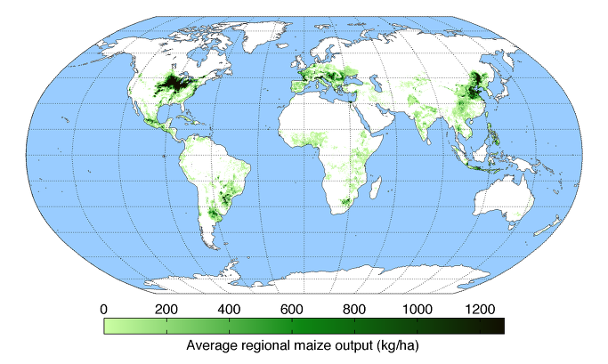
(정작 요즘은 중근동 지방에서는 옥수수를 별로 재배하지 않는 모양입니다. 하긴, 미국과 중국, 우크라이나 등에서 워낙 대량으로 재배하니까 상대적으로 미미해 보일 수 밖에 없겠지요. 세계 옥수수 생산량 중 대부분은 사료와 공업용 알코올 원료로 사용되고, 식용은 전체의 한 10% 정도입니다. 그 중에서도 식용유나 전분 생산용을 빼고 사람 입 속에 직접 들어가는 것만 치면 전체 생산량의 3%도 안된답니다.)
그럼에도 불구하고 나폴레옹의 병사들은 감자는 지겹도록 먹었으나 옥수수는 그다지 먹지 않았습니다. 아니, 최소한 저는 나폴레옹의 병사들이 옥수수를 먹었다는 이야기를 단 한번도 읽지 못했습니다. 딱 한번, 영국군이 옥수수 빵을 먹은 이야기를 접한 적이 있습니다. 아래는 J. Kincaid 라는 이름의 스코틀랜드 출신의 젊은 영국군 장교의 포르투갈에서의 일기 중 일부입니다.
-----------------
5월 20일, 빵 또는 그 비슷한 아무것도 없이 지낸지 3일 째다. 빵 없이 고기만 며칠 먹다보면 고기가 정말 구역질 날 정도가 된다.
오늘 새벽에는 평소처럼 매우 이른 새벽에 행군을 시작하지는 않을 것이라는 이야기를 듣고, 난 해가 뜨기 전에 시에라 데스트렐라 (Sierra D'Estrella) 앞에 있는 약 2마일 (약 3.2km) 떨어진 한 마을로 출발했다. 그 마을은 프랑스군의 동선 바깥 쪽에 있었으므로, 뭔가 돈을 주고 살 수 있는 것이 있지 않을까 싶어서였다.
도착해보니, 인근 수녀원에서 도망쳐 나온 수녀들이 마을 공동 화덕 건물 바깥 쪽에서 기다리고 있는 것을 볼 수 있었다. 이들은 옥수수 가루로 만든 빵 반죽을 들고 와 여기서 굽고 있었던 것이었다. 내가 그 빵을 좀 달라고 간절히 부탁하자, 그들 중 두 명이 친절하게도 자신들의 몫을 내게 내주었다.
난 그녀들에게 키스와 함께 1달러 (dollar는 당시 스페인 화폐 단위입니다 미국 달러도 원래 여기서 나온 말입니다)를 보답으로 주었다. 그녀들은 나의 키스를 '무척 특별한 호의'로 받아들였고, 내가 내민 1달러 은화에 대해서는, 그것을 물끄러미 보더니, 이런 말을 하면서 받아 들었다.
"우리 의지가 아니라, 우리의 가난이 거절하기 어렵게 만드네요."
난 이 설구워진 빵덩어리를 들고 이제 막 무장을 하고 있던 동료 장교들에게 달려갔다.
-----------------
사실 이 훈훈한 일화에서, 왜 당시 병사들의 모닥불에 걸려 노릇노릇 구워지는 작물에 감자는 있어도 옥수수는 없었는지를 엿볼 수 있습니다. 강원도에서 길러진 햇옥수수를 삶아서 그대로 먹는 우리와는 달리, 당시 유럽인들은 옥수수를 가루를 내어 밀가루처럼 먹으려 했습니다. 이는 이해가 가는 일인 것이, 우리가 '즉석 제철 간식' 정도로 먹는 옥수수는 sweet corn이라고 하는 것이고 말리지 않으면 장기 보존이 되지 않습니다만, 대량으로 재배하는 옥수수는 밀이나 보리처럼 오래 저장하려면 바싹 말려 낟알 형태로 저장해야 했습니다. 저는 직접 본 일이 없습니다만, 옥수수도 바싹 말리면 그 알갱이가 매우 단단해지고, 특히 그 껍질은 쌀겨나 밀겨처럼 사람이 먹기에는 매우 껄끄러워지는 것은 당연할 것입니다.
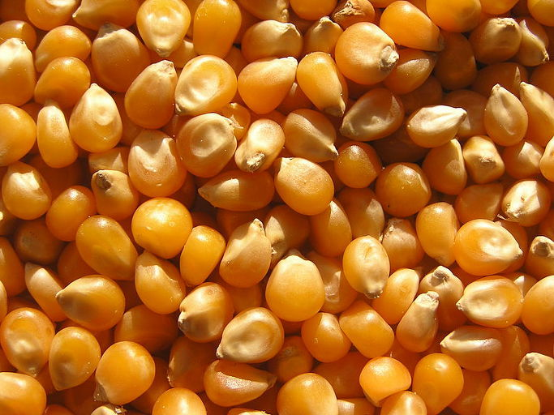
(바짝 말린 옥수수 알갱이들입니다. 보기만 해도 이가 아픈 듯 합니다.)
그런 옥수수를 가루로 만들어 빵이나 죽을 만드려면 매우 어려웠을 것입니다. 이는 밀이나 보리도 마찬가지지요. 가령 들판에 잘 익은 밀이 가득하더라도, 그것을 걷어들여 배를 채우려면 낫으로 추수하는 것은 물론이고, 껍질을 벗기는 도정 작업 이전에 며칠 동안 햇빛에 말려야 하거든요. 곡물 창고에 잘 마른 밀알이 쌓여 있다고 해도 문제였습니다. 변질을 막기 위해 밀알은 껍질을 벗기지 않은 낟알 형태로 보관하는데, 그 껍질을 벗겨내려면 풍차나 물방앗간이 없는 상황에서는 맷돌이라도 있어야 합니다. 그러나 가뜩이나 무거운 병사들 배낭 속에 맷돌이 들어있을 리가 없지요. 그러다보니, 기원전 40~30년에 로마의 마르쿠스 안토니우스(Markus Antonius)가 파르티아(Parthia, 오늘날의 이란-이라크)를 침공했을 때 먹을 것이 떨어지자, 그의 캠프 안에서는 거칠게 간 밀가루로 만든 빵 한덩어리가 같은 무게의 은과 교환되었다는 이야기가 나왔던 것입니다.
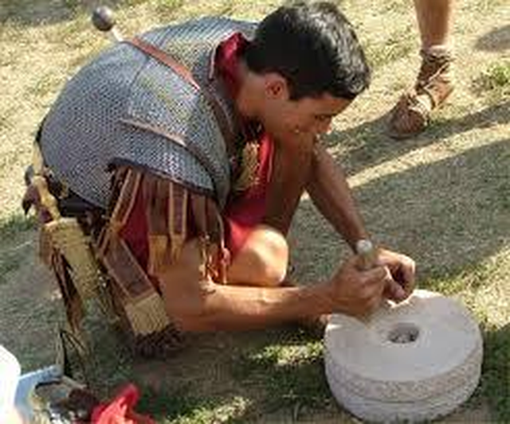
(구글에서 roman hand mill 로 검색하니 이런 사진도 나오는군요.)
당장 배가 고파 죽을 지경이고 내일이면 또 다른 장소로 행군해가야 하는 병사들에게는 감자가 딱 적격이었습니다. 감자는 추수 및 건조, 도정과 체질, 반죽 같은 것이 전혀 필요없이, 그저 삽 한자루, 혹은 아예 막대기나 맨손으로도 캐내서 냄비만 있으면 간단히 삶아 먹을 수 있었으니 병사들에게는 정말 고마운 작물이었을 것입니다.
그리고 옥수수가 나폴레옹의 병사들에게 사랑받지 못한 이유는 아무래도 기후 탓이 클 것입니다. 감자는 추운 페루의 고지대 출신이고, 옥수수는 무더운 평원 지역 출신입니다. 옥수수의 성장에는 뜨거운 태양, 그것도 연간 평균 온도보다는 정말 뜨거운 날이 며칠이나 되느냐가 더 영향을 끼친다고 하는데, 그러다보니 옥수수는 주로 남부 유럽에서 많이 재배되었고, 나폴레옹의 후반부 주무대였던 독일과 폴란드 등 북부 유럽에서는 옥수수 재배가 그렇게 많지 않았던 것입니다.
하지만 역시 나폴레옹의 주무대라고 할 수 있는 스페인이나 이탈리아에서는 어땠을까요 ? 감자나 옥수수나 성서에 나온 곡식이 아니다보니 유럽에서는 그에 대한 경계심과 반감이 강했는데, 종교적으로 좀 광신적인 스페인에서는 무더운 남부 안달루시아 지방에서만 가축 사료용으로 키웠습니다. 그러다보니 나폴레옹의 군대가 옥수수를 빼앗아 먹을 일은 많지 않았습니다.
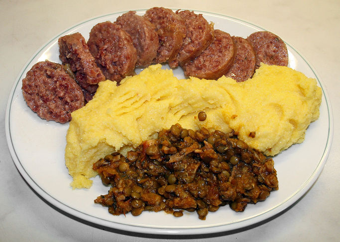
(이탈리아의 옥수수죽 폴렌타입니다. 거의 떡과 죽의 중간에 해당한다고 볼 수 있습니다. 전에 케이블 TV에서 어떤 이탈리아 요리사와 영국인 미술학자가 이탈리아 이곳저곳을 여행하면서 찍은 먹방을 봤는데, 거기서 말하는 내용에 따르면 폴렌타는 마당에서 장작불로 반드시 남자가 요리하는 것이 전통이랍니다. 그런데 뭐 요리랄 것도 없이, 그냥 옥수수 가루에 물 넣고 끓이는 것이더라고요. 2차 세계대전 중에는 정말 먹을 것이 폴렌타 밖에 없었다라고 회고하는 장면도 나오더군요.)
다만 이탈리아에서는 옥수수를 많이 키웠고, 사람도 많이 먹었습니다. 북부 이탈리아에 옥수수가 널리 퍼진 것은 17세기 후반이라고 하는데, 그나마 granoturco, 즉 '터키 곡식'이라는 이름으로 오스만 투르크로부터 역수입 되었습니다. 옥수수 종자를 적국인 오스만 투르크에게 팔아넘긴 것이 그들의 선조인 베네치아 상인들이었다는 것은 잊혀진지 오래였던 것이지요. 어쨋거나 18세기 전반에 이미 북부 이탈리아에서는 노란 옥수수 죽 폴렌타(polenta)가 배고픈 서민들의 음식으로 확고히 자리를 잡았습니다.
그런데 18세기 말과 19세기 초에 북부 이탈리아를 마치 놀이터처럼 드나들었던 나폴레옹의 군대가 폴렌타를 몰랐다는 것은 말이 안 됩니다. 아마 북부 이탈리아에서는 나폴레옹의 군대도 폴렌타를 좋든 싫든 먹었을 것입니다. 그럼에도 불구하고 나폴레옹이 폴렌타를 값싸고 우수한 군용 식품으로 채택하지 않은 것은 아마도 이탈리아에 유행하던 병 펠라그라(pellagra) 때문이었을 것입니다. 이 병은 옥수수 죽 폴렌타를 먹고 생기는 병입니다.
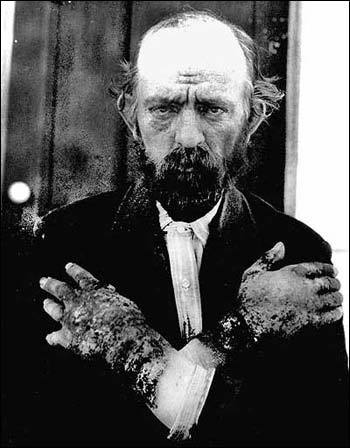
(펠라그라에 걸린 남자의 사진입니다. 손의 피부염을 보십시요.)
옥수수를 먹으면 병이 생긴다고요 ? 예, 생겼습니다. 이 병은 피부염, 설사, 탈모, 정신착란까지 일으키는 무서운 것이었는데, 요약하면 비타민 B의 일종인 나이아신(niacine)의 부족으로 생기는 것입니다. 원래 옥수수를 주식으로 했던 아메리카 대륙의 인디언들은 절대 옥수수를 그대로 먹지 않았고 잿물 등에 담가 불린 뒤 껍질을 벗겨내어 가루로 만든 뒤 죽이나 빵을 만들어 먹었습니다. 또 콩과 채소, 물고기 등을 함께 먹었지요. 핵심은 잿물, 즉 알칼리 용액에 옥수수 낟알이 오래 잠겨 있는 동안 옥수수 속에 들어있는 나이아신이 활성화되어 풀려나오는 것이었고, 또 다른 비타민 함유 음식과 섞어 먹는다는 점이었습니다. 그러나 나이아신이나 비타민 같은 것을 알지 못했던 이탈리아 농민들은 잿물에 불리는 과정 없이, 옥수수 알갱이를 그대로 갈아 노란 가루를 내어 그대로 폴렌타 죽을 쑤어 먹었습니다. 최악인 것은 가난하다보니 오직 폴렌타만 먹었다는 점이지요. 많은 농민들이 펠라그라에 걸려 죽어야 했습니다. 많은 지식인들이, 옥수수 이전에는 없었던 이 병이 생긴 것은 오로지 옥수수 떄문이라고 지적했습니다만, 굶어죽는 것보다는 나았으므로 그래도 농민들은 폴렌타를 먹었습니다.
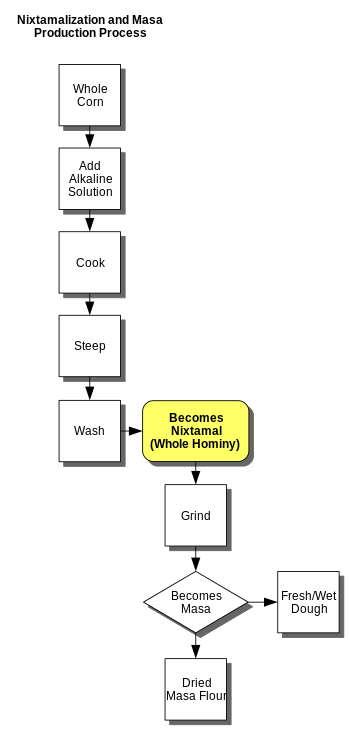
(현대적인 옥수수 가루 제조법입니다. 염기성 화학약품으로 처리를 하는 부분이 맨 처음에 들어갑니다.)
이에 대해서는 1786년~1788년 이탈리아를 여행했던 괴테도 한마디 남길 정도였습니다. 그는 이렇게 적었습니다.
"이탈리아 주민들에 대해서는 별로 할 말도 없고, 한다고 해도 그리 호의적인 평가는 내릴 것이 없다... 누렇게 뜬 얼굴의 아낙네들이 빈곤에 대해 넋두리를 늘어놓았고 그 애들도 다를 바 없이 불쌍한 모습이었다. 난 그들의 비참한 건강 상태는 계속 노란 폴렌타를 먹기 때문이라고 믿는다."
이 펠라그라 병은 이탈리아 뿐만 아니라 옥수수를 먹는 모든 가난한 지역, 즉 미국 남부에서도 끊임없이 발생했고, 1915년에 들어서야 그 원인이 밝혀졌습니다. 현대 미국인들이 즐겨먹는 아침 식사 메뉴 중 하나인 하미니 그리츠(hominy grits)도 수산화칼슘(limewater)으로 알칼리 처리를 해서 껍질을 도정한 것입니다. 그래서 색깔이 하얗지요. 이탈리아의 옥수수 죽 폴렌타(polenta)는 여전히 알칼리 처리를 하지 않기 때문에 대개 노란색입니다만, 편식하지 않으면 펠라그라 걱정은 안 하셔도 된답니다. 오히려 한반도 북부에 있는 김씨 왕조 국가에서는 여전히 펠라그라가 홍반병이라는 이름으로 아직도 존재한다고 합니다.
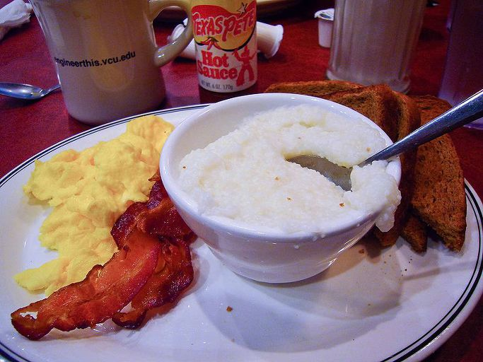
(제가 카투사로 군 생활할 때, 전혀 불평하지 않은 것이 아침식사였습니다. 집에서 먹는 것보다 더 잘 먹었는데, 그 중에서도 저는 저 하얀 하미니 그리츠에 소금과 후추로 간을 해서 먹는 것을 매우 좋아했습니다. 맛이... 밍밍한 흰쌀죽보다 더 고소했는데, 우리가 아는 그런 옥수수맛은 거의 나지 않습니다.)
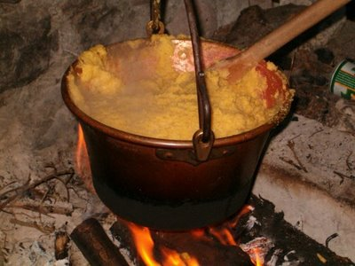
(2차 세계대전과 폴렌타에 관한 재미있는 이야기로, 이탈리아 농민들의 무솔리니에 대한 저항이 시작된 것은 정부가 전쟁 물자 부족을 이유로 paiolo라는 구리솥을 징발하려 한 것이 계기가 되었다는 이야기가 있습니다. 그러면 폴렌타는 뭘로 만들란 말이냐라며 어머니들이 거세게 저항하는 바람에 결국 무솔리니는 구리솥 징발을 철회했을 뿐만 아니라, 결국 권력과 목숨도 잃었지요. 시사하는 바가 큰 이야기입니다.)
옥수수보다 감자를 선호했던 것은 아일랜드인들도 마찬가지였습니다. 춥고 일조량이 많지 않은 아일랜드에서는 별다른 선택의 여지가 없었겠지요. 아일랜드 농민들은 거의 전적으로 감자를 먹고 살았습니다. 감자는 옥수수와는 달리 자체적인 비타민도 충분하여 펠라그라와 같은 병도 일으키지 않았고, 유일한 단점인 칼숨과 단백질 부족은 영국인 지주를 위해 키우는 암소로부터 얻은 우유로 해결이 되었거든요. 그러나 뭐든 순혈주의, 단일화, 획일화는 좋지 않다는 것이 1840년대 아일랜드를 덮친 잎마름병(blight)으로 증명이 됩니다. 그것도 아주 비참하게요.
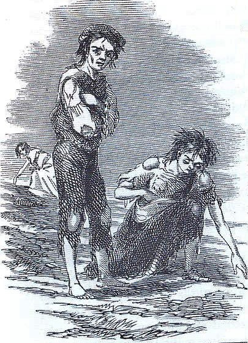
(다 썪은 감자 밭에서 먹을 만한 감자를 찾는 비참한 아일랜드인들의 모습을 그린 당시 삽화입니다.)
순식간에 아일랜드 전역으로 퍼진 잎마름병은 불과 수주일만에 아일랜드 감자 농사를 황폐화시켜버렸고, 아일랜드인들은 순식간에 기아의 비극으로 빠져들었습니다. 요즘처럼 교통과 통신이 발달한 현대에도 아프리카 등에서 발생하는 기아에 대해 UN 등의 구호활동이 그리 원활하지 않은데, 당시의 구호 활동은 더욱 부진했습니다. 당시 아일랜드를 지배하던 영국의 집권당은 보수당인 토리(Tory) 당이었습니다. 이들은 소위 자유경제주의의 신봉자로서, 이들의 경제철학은 한마디로 Laissez-faire(레세-페르, 내버려두라)는 것이었습니다. 아담 스미스가 언급한 '보이지 않는 손', 즉 시장의 힘이 알아서 모든 문제를 해결해 줄 것이므로 정부의 간섭과 그에 따르는 세금은 최소화하라는, 좋게 말해서 순진하고 나쁘게 보면 가진 자의 편만 들어주는 것이었습니다. 그들은 아일랜드의 기근이 얼마나 심각한지 잘 몰랐고, 또 알고 싶지도 않았습니다.
일부에서는 사태의 심각성을 파악하고 있었지만, laissez-faire를 신봉하는 사람들이 만든 법안치고는 매우 모순적인 규제 조치 하나가 구호 조치를 막고 있었습니다. 곡물법(Corn law, 영국에서 corn은 옥수수가 아니라 곡물, 특히 밀을 뜻합니다)가 그것이었는데, 이 법은 지주계급의 이익을 지켜주는 것이었습니다. 즉, 당시 귀족들은 대개 농지를 소유한 지주들이었는데, 해외의 싼 곡물이 들어와 자신의 수익 구조를 해치지 못하도록 해외로부터 수입되는 곡물에는 엄청난 관세를 붙이는 것이었지요.
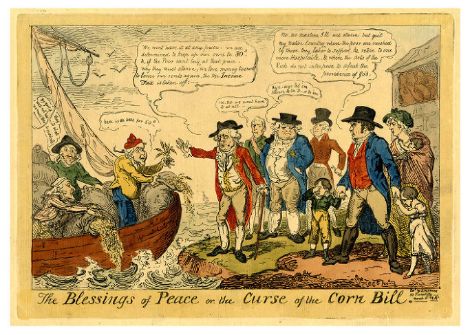
('평화의 축복과 곡물법의 저주'라는 제목의 당시 만화입니다. 가운데 서있는 잘 차려입은 4명은 영국 지주들입니다. 이들은 자루당 50실링에 밀을 팔겠다는 프랑스인들에게 꺼지라고 말하고 있고, 결국 프랑스인들은 바다에 그 밀을 버리고 있습니다. 한편, 창고에는 자루당 80실링의 영국산 밀이 잔뜩 쌓여있습니다. 이 밀을 살 돈이 없어 굶고 있는 오른쪽의 영국인 가족은 이런 개같은 나라를 떠나겠다고 불만을 터뜨리고 있습니다. 헬조선은 특정 지역에만 있는 것이 아니라, 일부 기득권층의 이익을 위해 백성 대부분이 희생해야 하는 곳이며, 언제 어디에나 다 있었고 앞으로도 있을 것입니다.)
다행히 사태의 심각성을 파악한 사람 중 하나는 집권당의 수장인 로버트 필(Robert Peel) 총리였습니다. 그는 일방적으로 진보당인 휘그(Whig) 당과 연합하여 자기 당이 지키려던 곡물법을 파기하고 미국으로부터 배 두 척 분량의 옥수수를 수입하여 아일랜드의 기근을 해결하려 했습니다.
하지만 그 정도의 양으로는 턱도 없다는 점과 아무리 싸다고 해도 그런 옥수수에 대해서도 아일랜드인들이 1파운드에 1페니라는 돈을 내야 했다는 점 외에도, 곡물 자체에서 문제가 발생했습니다. 들어온 옥수수는 강원도에서 막 온, 부드럽고 달콤한 김이 무럭무럭 나는 찐 옥수수가 (당연히) 아니었습니다. 총알처럼 단단하게 말린 알갱이 형태로 들어온 이 옥수수는 삶는다고 해도 도저히 그대로 먹을 수가 없었기 때문에, 먼저 갈아서 껍질을 벗기고 가루를 낸 뒤 물에 삶아 그리츠건 폴렌타건 팬케익이건 만들어야 했습니다. 그런데 아일랜드에는 제분소는 커녕 맷돌도 충분히 없었습니다. 온 나라가 감자만 먹다보니, 밀이나 보리, 옥수수 등 단단한 곡물을 제분할 일이 없었던 것입니다. 서둘러 맷돌과 그릇을 모아 옥수수 가루를 내긴 했습니다만, 아일랜드인들은 포만감을 주던 감자에 비해 이상한 맛이 나는 노란색 옥수수 가루를 무척이나 싫어했습니다. 그들은 옥수수 가루를 필(Peel)의 유황가루(Peel's brimstone)라고 불렀는데, 말이 씨가 된다고, 옥수수를 먹기 시작한지 얼마 안되어 당장 탈이 나기 시작했습니다.
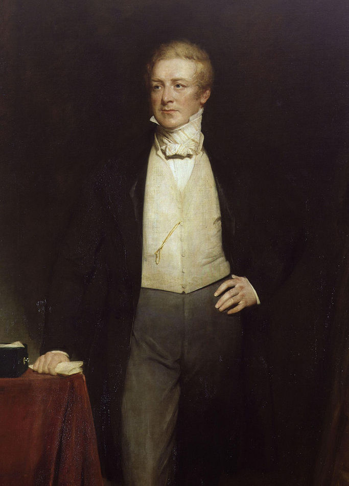
(나름 최선이랍시고 노력했으나, 결국 좋은 소리는 못 들었던 필 총리입니다.)
펠라그라가 생기기도 전에, 괴혈병부터 시작된 것입니다. 원래 감자는 비타민 C도 풍부한 훌륭한 식품이었는데, 옥수수는 전혀 그렇지 않았던 것입니다. 비타민 C 부족으로 인한 괴혈병은 채소를 먹으면 해결되는 간단한 병이었지만, 당시에는 그런 푸성귀를 먹지 않아도 (감자 덕분에) 끄떡 없었던 아일랜드 사람들에게는 옥수수를 먹으면 생기는 괴상한 병이었습니다. 결국 필 총리는 아일랜드인들에게 옥수수라도 먹이기 위해 독단적으로 곡물법을 폐기하는 바람에 총리직에서 물러나야 했지만, 아일랜드의 기근은 1852년까지 계속 되었습니다. 총 1백만 명이 사망하고 수십만이 미국으로 이주하는 등, 아일랜드는 인구가 20~25% 감소하는 참혹한 변을 겪어야 했습니다.
(아일랜드 미스 교구의 주교인 토마스 널티(Thomas Nulty, 1818-1898)입니다. 그는 아일랜드 대기근시 처음 맡은 교구에서 많은 사람들이 굶어죽는 것 뿐만 아니라, 세금 문제 때문에 가뜩이나 굶주리는 소작농들을 지주들이 수천명 단위로 매몰차게 쫓아내어 결국 그중 상당수가 길 위에서 굶어죽는 것을 목격한 뒤 큰 충격에 빠집니다. 그는 그런 비극적인 장면들을 기록으로 남기는데 그치지 않고, 성직에 있으면서도 적극적인 개혁주의자가 되어 소작농들의 권리 증진을 위해 많은 활동을 했습니다. 개인적인 생각입니다만, 핍박받는 빈민들의 어려움을 보고도 '그건 정치적인 문제라서 개입하면 안된다'라고 말하는 분이 있다면 그 분은 성직자가 아니라고 생각합니다.)
나폴레옹 군대의 감자 이야기를 하다가 결국 트럼프 이야기로 마무리를 하게 되네요. 아일랜드의 감자 기근은 영국의 경제 수탈에 따른 기형적 경제 구조와 가진 자만을 위한 불합리한 법규 등에 의한 비극일 뿐만 아니라, 아무리 우수하다고 해도 단일 품종의 곡물에 의존하다가는 언제 어떤 어려움을 겪을지 모른다는 다양성에 대한 메시지라고 생각합니다. 트럼프가 정말 특정 이슬람 국가 출신에 대한 입국 금지 명령을 내려 말썽입니다만, 미국의 힘은 다양성이고 미국의 본질은 이민자들의 나라라는 점을 미국인들이 깨달았으면 합니다.
Source : Napoleon on the Art of War By Jay Luvaas
Napoleon's Men: The Soldiers of the Revolution and Empire By Alan Forrest
http://www.historyplace.com/worldhistory/famine/begins.htm
http://www.defencejournal.com/2001/apr/weapons.htm
http://www.zingermansfoodtours.com/2011/08/why-did-polenta-become-italian/
https://en.wikipedia.org/wiki/Great_Famine_(Ireland)
https://en.wikipedia.org/wiki/Thomas_Nulty
빵의 역사 By 하인리히 E. 야콥 (우물이 있는 집 출판사)
Adventures in the Rifle Brigade, in the Peninsula, France, and the Netherlands from 1809 to 1815 By J. Kincaid